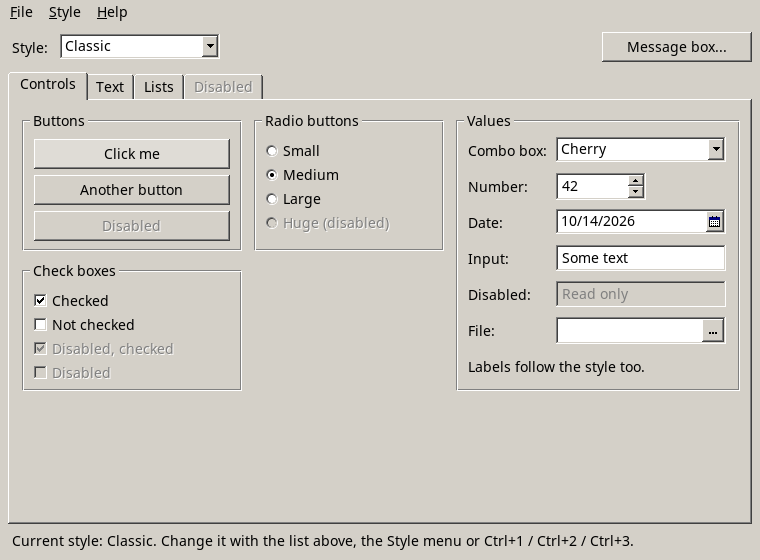
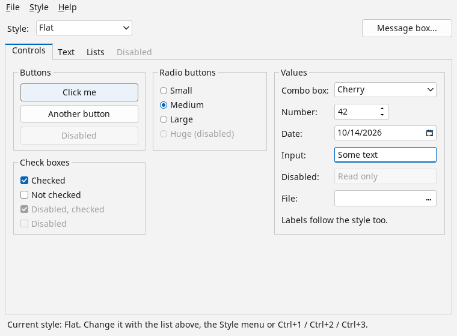

Styles
Every control draws through one Style object, Style.Current. A style has a palette (face, text, field, selection
colors, ...) and a method for each part the controls draw: buttons, input frames, check boxes, tabs, scroll bars, menus and
so on. Doqua has two styles:
ClassicStyle, the default: the Windows 9x/2000 3D look with raised and sunken edges.FlatStyle: a modern flat design with light surfaces, rounded corners and an accent color.


Changing the style
Assign a style before the first window is shown, or at any time later: setting Style.Current redraws every open window
at once, and raises Style.Changed. Sizes are the same in every style, so nothing moves.
Style.Current = new FlatStyle();
return Application.Run(window);The palette colors are init-only properties, so a style can be adjusted when it is created:
Style.Current = new FlatStyle
{
Accent = Color.FromRgb(0x2E8B57),
SelectionBackground = Color.FromRgb(0x2E8B57),
TextSelectionBackground = Color.FromRgb(0x2E8B57),
};Colors of single controls
Color properties of controls (Color, Background, DisabledColor, ...) follow the current
style until they are set. A color set on a control wins over the style and stays when the style changes. The same goes for
Window.Background, which follows Style.WindowBackground.
Your own style
Derive from ClassicStyle or FlatStyle and override the parts that should look different, or derive from Style
and implement all of them. Each method gets a DrawingContext, the rectangle to draw in and a PartState (hot, pressed,
focused, disabled, checked, selected):
class RoundButtonStyle : FlatStyle
{
public override string Name => "Round buttons";
public override void DrawButton(DrawingContext dc, Rect bounds, string text, Font font, Color face, Color textColor, PartState state)
{
var fill = state.HasFlag(PartState.Pressed) ? Accent : state.HasFlag(PartState.Hot) ? Border : face;
dc.FillEllipse(bounds, fill);
var size = font.MeasureText(text);
var color = state.HasFlag(PartState.Disabled) ? DisabledText : textColor;
dc.DrawText(text, font, color, bounds.X + (bounds.Width - size.Width) / 2, bounds.Y + (bounds.Height - size.Height) / 2);
}
}A custom control can draw with the style too, so it changes with the rest: for example,
Style.Current.DrawField(dc, new Rect(0, 0, Width, Height), Style.Current.FieldBackground, PartState.Normal).
The Styles example shows most controls and switches between the styles at run time.